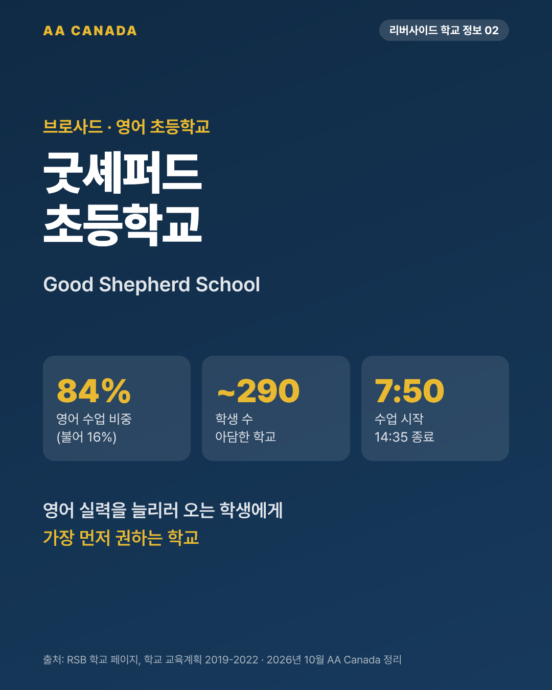

기준일 2026-10-21 · AA Canada 정리 교육청 공통 정보는 리버사이드 교육청 공통 안내를 보세요.
한 줄 요약: 브로사드 대부분을 맡는 영어 전용 초등학교. 수업의 약 84%가 영어입니다. 영어 실력을 늘리러 오는 조기유학생에게 가장 먼저 권하는 학교입니다.
| 항목 | 내용 |
|---|---|
| 주소 | 5770 Aline Street, Brossard, QC J4Z 1R3 |
| 연락처 | 450-676-8166 · goodshepherdoffice@rsb.qc.ca |
| 학년 | 유치원(K5)~6학년. 2026-27 학군 안내에 4세 유치원(K4) 포함 |
| 학생 수 | 약 290명 |
| 교장 | Camille François (교감 Christina Bell) |
| 수업 시간 | 7:50~14:35 |
| 데이케어 | 7:00~7:50, 14:35~18:00 (담당 450-676-5539) |
| 프로그램 | 영어 프로그램만 (불어 이머전 없음) |
| 학군 | 브로사드 대부분(Allard, Albert, Alcide, Aylmer 4개 거리 제외) + 롱괴이 생위베르 지역(Laflèche 제외) |